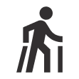

Bienvenue dans notre magasin de location de ski à Vars ! Nous sommes
impatients de vous accueillir pour votre prochain séjour sur les pistes.
Pour vous assurer une expérience de location de ski à Vars inoubliable,
nous proposons une large gamme de skis de qualité, adaptés à tous les
niveaux.
En outre, nos professionnels vous aideront à choisir le matériel qui
convient le mieux à votre niveau et à vos besoins. De plus, afin de
maintenir votre matériel en parfait état, nous proposons également des
services de réparation et de maintenance.
N’hésitez pas à nous rendre visite ou à nous contacter pour plus
d’informations sur nos offres de location de ski. Nous espérons vous
accueillir bientôt dans notre magasin à Vars !
Notre magasin
Nous sommes impatients de vous accueillir pour votre prochain séjour
sur les pistes.
Pour vous assurer une expérience de ski inoubliable, nous proposons
une large gamme de skis de qualité.
De plus, notre magasin est idéalement situé au cœur de Vars, à
proximité immédiate des pistes de ski.

Une équipe de passionné
Notre équipe est à votre écoute pour vous aider à choisir le
matériel de ski qui convient le mieux à votre niveau et à vos
besoins.
Pour vous assurer une expérience de ski agréable et sans soucis, nos
professionnels vous conseilleront au mieux dans le choix de votre
matériel.
La location de ski à Vars dans notre magasin
Réservez votre matériel auprès d’une équipe de passionnés et
profitez de services incontournables : consigne à ski, séchage des
chaussures, entretien complet du matériel, vente d’article choisi
parmi les meilleures marques du moment …
Location de ski : profitez des grandes marques à prix raisonnables
Notre magasin à Vars propose une variété de marques de ski de qualité,
incluant Head, ZAG, Elan, Nitro, Salomon et K2. Ces marques sont
reconnues pour leurs skis performants et fiables pour vous aider à
profiter pleinement de votre séjour.
Vars
Envie de skier dans l’un des plus beaux domaines skiables des Alpes du
Sud ? La station de ski de Vars est faite pour vous ! Avec ses pistes
variées et ses paysages somptueux, Vars est le lieu idéal pour passer
des vacances inoubliables sur les pistes. Que vous soyez débutant ou
skieur confirmé, vous trouverez de quoi vous divertir sur les pistes
de Vars. En plus de ses pistes de ski, la station de ski de Vars
propose également de nombreuses activités pour toute la famille.